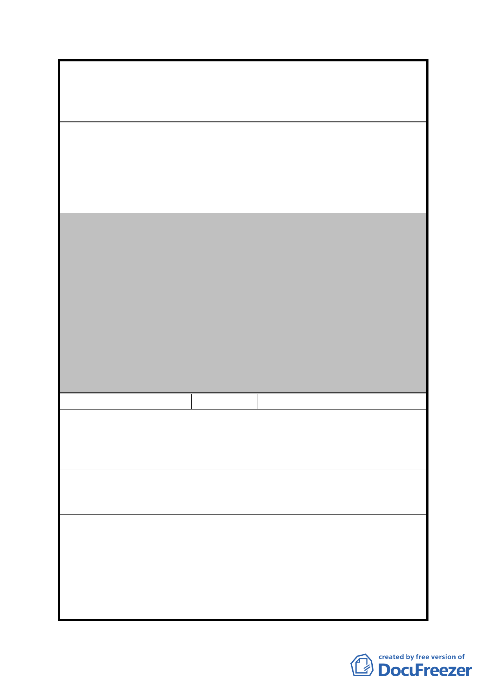

案名
委員會決議
編號
陳情理由
建議辦法
發展局回應意見
委員會決議
擬定臺北市內湖區蘆洲里附近工業區細部計畫暨變
更第 2 種工業區為科技工業區 B 區(特)、科技工業
區 B 區、道路用地、護坡用地及變更工業區(供輕工
業使用)為科技工業區 A 區(特)計畫案
二、 另關於市地重劃地主需負擔比例係依重劃相
關規定辦理，由參加重劃土地所有權人按其
土地受益比例共同負擔，包含用地負擔及費
用負擔。
三、 至有關所陳退回全部或部分所繳地價稅因非
屬都市計畫範疇，建議洽稅捐單位詢問。
一、 本案同意取消原計畫公開展覽範圍內住宅區
及保護區劃設之構想，將全區變更為科技工
業區。
二、 有關使用強度、使用項目、都市設計審議、
公共開放空間等依原公展有關內容通過。
三、 本案訂定開發時程獎勵，「重劃區範圍土地於
重劃完成之日起 2 年內開發者，給予 10%基準
容積獎勵。惟須於重劃完成之日起 3 年內取
得建造執照，否則本時程獎勵予以取消」及
劃定都市更新地區，以促進本地區早日開發。
四、 市地重劃負擔比例與地價稅繳交問題，非本
會審議事項，請市府參考。
3 陳情人
李德振
原住宅區規劃之構想為提供原住戶之居民使用，但
實際上絕大多數現住戶為 30 建坪之公寓住宅，依目
前所定 200%容積率日後僅分配約 10 建坪，如何住
人？
1. 住宅區之容積率至少應為 300%，或不規劃住宅
區全部設為工業區。
2. 收件後請回函。
查為促進本地區更新開發，鼓勵地主參與市地重
劃，在總量不變原則下，本計畫已將科技工業區容
積率由原 200%調整提高為 364%(200%/55%)，另住
宅區容積率經考量重劃後土地價值差異以及基於
公平性原則，故住宅區仍維持原容積率 200%，未予
調整。
同編號 2 決議一，本案已無劃設住宅區。
- 29 -